recommend
天野一男建築工房
天野さんあってのOne’s Way
天野さんとの出会いは実家の新築でした。昭和の初期に建てられた実家の広間を実家の新居に取り入れてくださいました。それをきっかけに我家の基本設計をお願いすることに…。21世紀の始まりと同時に住み始め満足度は年々増しています。節目ごとにちょっとしたリフォームを繰り返していますが、その度に天野さんに相談し、素晴らしい提案をいただいています。
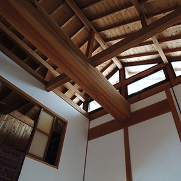
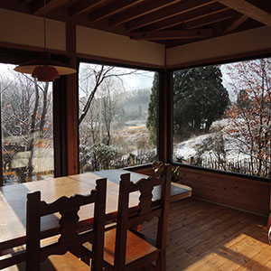
天野さんのこだわり
昨今、日本のあちらこちらで大地震が発生しています。1999年に天野さんに設計を依頼したのですが、その当時からできる限りの地震対策を講じてくださいました。ですから基礎の下のコンクリート杭、壁の裏の筋交いなど見えないところにも天野さんのこだわりと工夫が詰まっています。
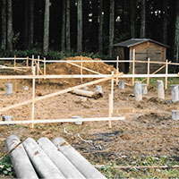
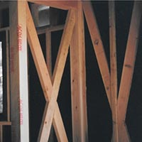
なお、天野さんは建築士としての仕事を後進に委ね、現在は地域活性化の活動に取り組んでいらっしゃいます。
bue-due[ブーエドゥーエ] 中村和生さん
bue-dueは、わが家の「住医」
わが家では、bue-due の中村和生さん(呼称は、たまちゃん）を木製品の「住医」と呼んでいます。
はじめての依頼は、小学校高学年の頃から使っていた椅子の不具合を直していただくことでした。その後、市販品では納得したものが見つからなかったカーテンポールに始まり、キッチンキャビネット、グラスラックなど、「住医」への依存度が年々高まっています。
bue-dueの魅力
bue-due のたまちゃんの作品の魅力は、あたかも最初からそこにあったかのようなところだと思います。見ただけでは作品の個性を感じることが難しいのです。
しかし、手に取ってみて、使ってみて、作品に組み込まれた工夫を知ってみて、その個性を実感できます。一度手にしたら後戻りできない作品とたまちゃんの存在は私たちの暮らしに欠かせません。
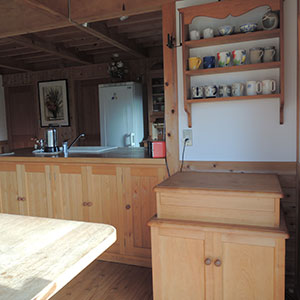
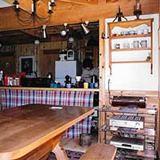
bue-dueデザインに注目！
2017年5月に富山県魚津市で開催された全国植樹祭とやまで使用された県産材を利用した木製カウンターをbue-dueの中村さんがデザインされました。ヨットを模した日差しよけの角度を変えられる屋根にご注目ください。
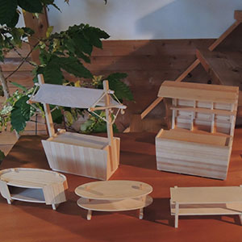
［お問い合わせ］〒939-2333 富山県富山市八尾町桐谷1474番地 tel/fax:076-455-0385なお、2017年11月よりbue-dueさんは家具製作をお休みされています。木製小物の一部をOne’s Wayにて販売いたしております。購入をご希望の方は、お問い合わせフォームよりご連絡ください。
Salon d'Estaminet
エスタミネさんのルーツ
シェフの田岸さんは、富山市の老舗フランス料理店「レストラン小西」で修行の後、幼子と奥様を高岡に残してフランスのムージャンへ一人旅立たれました。南フランス、カンヌの北10kmにある小さな美食の街にあるミシュラン一つ星レストランで修行の後、高岡にて開業されました。
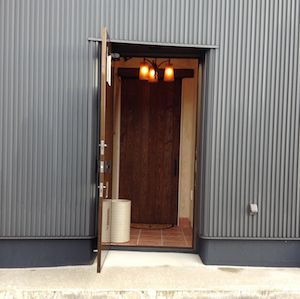
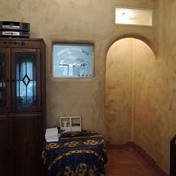
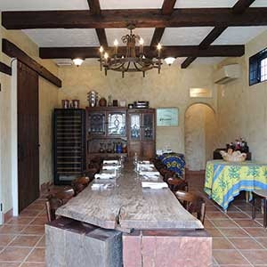
エスタミネさんの料理
開業当初、ボリュームたっぷりの田舎料理に感激したことは四半世紀以上たった今も鮮明に覚えています。2012年に国宝瑞龍寺の近くに店を移転され、フランスから取り寄せられたジビエ、地元産のお魚や野菜などをメインにした食材で丁寧に作られたお料理をいただいています。毎回、違うメニューで季節感を満喫できることも魅力の一つです。昼、夜とも1組限定ですので、他のお客さんを気にすることなくゆっくりと食事ができます。
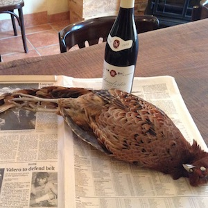
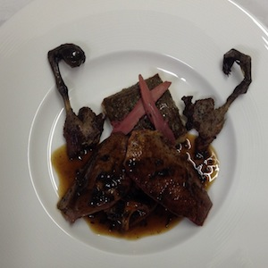
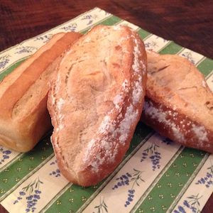
エスタミネさんの魅力
シェフと奥様のお二人で切り盛りされており、食事の後は料理のことや趣味のことなどの会話も楽しんでいます。私たちは南仏に行ったことはありませんが、内装は南仏のイメージを喚起させてくれます。随所にシェフのこだわりを感じるインテリアを楽しめることも魅力の一つです。
［お問い合わせ］〒933-0864 富山県高岡市関町55-1 tel:0766-26-4838イエルバスさん
One's Wayの準スタッフ!?
One's Wayの第1回のイベントから毎回参加していただき、準スタッフ的存在です。2013年秋のOne's Wayイベントではアロマテラピー教室の講師をつとめていただき、お好みの香りをブレンドしたアロマスプレーを作りました。
イエルバスさんの香り
2016年のイベントでは、One's Wayの雰囲気をイメージしたアロマを調合してもらいました。春は、初夏の爽やかさを感じる香りを、秋は包み込まれるような優しい香りを作ってくださいました。
イエルバスさんによると、One's Wayでは、内装に用いられている木の香りや、庭の木々が放つ香りが加わり、想定を超える香りが生まれるとのことです。 深い知識と多様な経験に裏付けされる発想で作られるアロマに毎回感激しています。
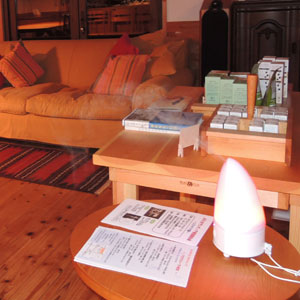
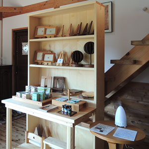
Jin Hongo 本郷仁さん
本郷さんの作品の魅力
私たちは、本郷さんの作品に触れることで、鏡が持つ魅力に虜になりました。鏡に映り込む景色や壁や床に映る反射光は、鑑賞者が動きながら、あるいは作品を動かしながら鑑賞するスタイルによって、インターラクティブな一期一会の空間が生まれます。「自分がかわることで世界が変わる」そのようなメッセージを感じます。
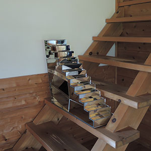
本郷さんの挑戦
舞台芸術にも関わりをもっていらっしゃいます。ダンスパフォーマンスの舞台では、本郷さんの鏡の作品が新たな使命を持ち、ダンスの表現に重層性を感じることができました。個展も精力的に開催されています。個展で新たな挑戦に触れることも、私たちの楽しみの一つです。
ガラス造形が夜の室内での反射光を映し出す様を観ることができます。再生ボタンをクリックしてください。
加積窯 濱元丈二さん
加積窯の魅力
魅力の根底には「そこにある土」から作品が創られることにあるのではないかと思います。お金をだせば陶芸に適した土を大量に取り寄せることができます。「そこにある土」を手に入れるには時間と手間が必要ですし、そこにあるだけしか手に入りません。制限の中で産み出される「美」を濱元さんの作品に感じるのかもしれません。
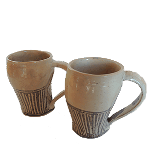
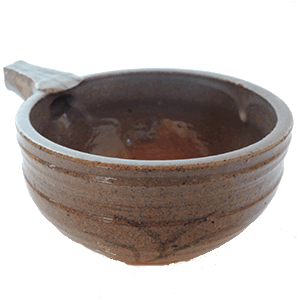
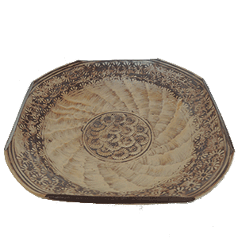
加積窯の作品の物語性
私が初めて手にした濱元さんの作品は、2012年に閉校になった富山県立海洋高等学校のグラウンドの土から作られたとのことです。その小皿を使うたびに、グラウンドで汗を流した高校生の姿を想像します。すでに加積窯は閉窯されました。ご縁がありわが家に来てくれた作品を大切にしていきたいと思っています。
残り少ない加積窯の作品はマイルストーン アートワークスでご覧になれます。
景観デザイン Leaf’s[リイフス]
Leaf’sさんの魅力はスタッフの多様性
Leaf’sさんの魅力に、デザインがお得意なスタッフ、土づくりがお得意なスタッフなど、スタッフの多様性があげられます。我家の庭のデザインは柿谷美保子さんが担当してくださいました。”どんぐりがころがる庭”のコンセプトの元、植栽には地元にある樹木を多数使ってくださり、私たちが望んだ”周囲の風景に溶け込む庭”を作ってくださいました。最初は小さかった樹木も5年目以降の成長には驚くばかりで、今では林となり里山の風景に溶け込んでいます。
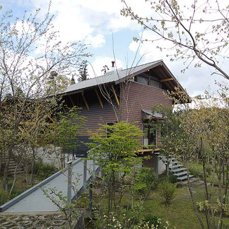
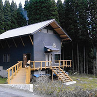
Leaf’sさんは我が家の「樹医」
Leaf’sさんのスタッフの一人である柳 真子さんは職藝学院で教壇にも立っていらっしゃいます。樹木愛と探究心にはいつも感服しいています。2014年に自分たちで植えた山桜、元気がなかったため、柳さんに相談。2016年の春に土壌改良し、移植してくださいました。その後、葉を出し秋には以前は楽しめなかった紅葉を観ることができました。
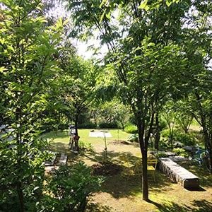
ガラス工房○マル 齋藤裕史さん
齋藤裕史さんの作品の特徴
ガラスといえば無色透明という私の先入観を覆した有色不透明な作品の数々。飲み慣れたアイスコーヒーやトマトジュースの味もPOPに変身。お漬け物もスタイリッシュに様変わり。何の変哲もないいつものメニューでも食事が楽しくなりました。
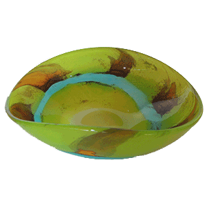
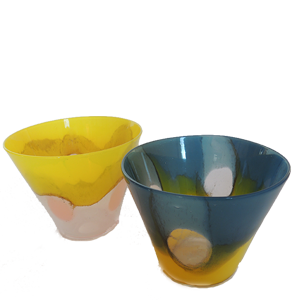
2014年の秋に富山から奥様のご実家がある山口県へ移住し、ガラス工房○マルを開窯されました。 現在はガラス工芸研究所で共に学ばれた奥様の由香理さんも制作に携わっていらっしゃいます。
宮田工務店 宮田邦彦さん
宮田父子に感謝
故宮田善行さん、邦彦さん父子に建てていただいた我家。邦彦さんが棟梁として初めて携わられたと聞いています。2000年の7月に棟上げ式をして入居までの約半年、朝早くから遅くまで仕事をしていただいた様は今もありありと蘇ります。
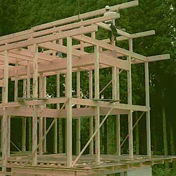
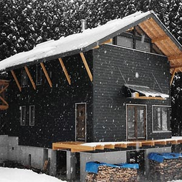
昔ながらの工法で！
施主である私たちと設計をしていただいた天野さんのこだわりで、できるだけ金具を使わずに在来工法で建てていただくようお願いしました。二階への階段もそれを物語っています。
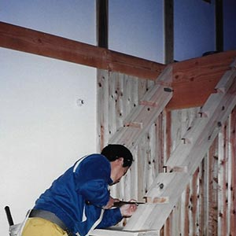
今も、度々小さい仕事をお願いしています。最近ではロフトへの階段を作ってもらいました。
大寺幸八郎商店さん
フラワースタンドがキューピット
富山県立近代美術館のミュージアムショップで購入した錫製のフラワースタンド、小花をグラスにいけるときなどに使っていました。花のもちがよく、形を自在に変えることができるのでちょっとしたオブジェにもなりました。
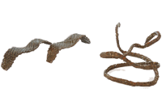
魅力あふれる大寺幸八郎商店さん
インターネットで高岡市金屋町にある大寺幸八郎商店さんの商品と分かり2014年の秋にお店を訪れました。お母様と息子さんで切り盛りしていらっしゃる店内は６代続いた歴史を感じるものでした。数々のオリジナル商品はもちろんのことお二人のお人柄にも魅力を感じました。オリジナル商品の魅力をOne's Wayのイベントで発信したいと思い、2015年春のOne's Wayのイベントへの協力をお願いしたところ快諾いただけました。
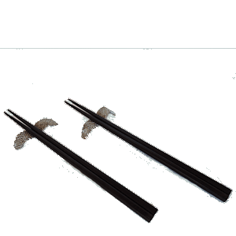
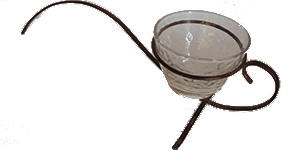
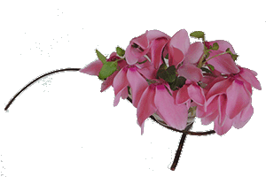
大寺幸八郎商店さんの金屋町への愛情、銅器への愛情が詰まった商品の数々は、日本を超えて世界にも発信されているようです。
ROMAN 上野茂さん
世界にたった１台の自転車をつくる職人
私たち夫婦は、それぞれ１台の自転車をもっています。２台ともスチールパイプを溶接して作った手作りフレームとキャリアでできています。それはブランド名ROMANの自転車フレームビルダー上野茂さんに作ってもらいました。私たちは上野さんをおっちゃんと呼んでいます。
私たち夫婦のライフスタイルには自転車は必需品で、とても使用頻度の高い道具です。日々の移動、通勤手段であり、かつサイクリングといった趣味の道具でもあるからです。
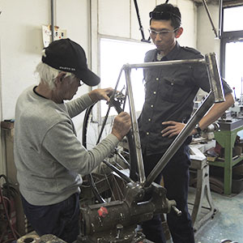
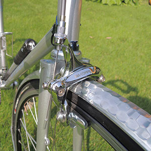
1対1の人間関係が背後に
昨今、日本の自転車事情は安価な日常のチャリか、はたまた高価なレジャースポーツ用といった非日常バイクか、両極端に分断されている感があります。毎日使ったり、目にしたりする道具だからこそおしゃれに機能的にあってほしい、そんなニーズに応えてくれるのがオーダーフレームビルダーとしてのおっちゃんなのです。あたかも普段履きサンダルのような気楽な自転車、そこにはおっちゃんの寛容で懐の深い性格が宿っています。と同時に私たちの暮らしや風景を形づくる重要なアイテムとして細かいところにも手抜きしないそんな職人気質といえるこだわりも見られます。
単にオーダー自転車だから世界に１台なのではありません。自転車の背後に、おっちゃんの顔の見える１対１の人間関係が浮かんでくるからこそ、世界にたった1台の自転車なのです。
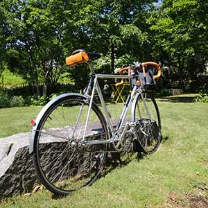
タウの木 中村ヨウイチさん
タウの木のアクセサリーの魅力
製作当初は、緻密なデザイン画を描き、同じ作品を複数製作されていたそうです。ある日、デザイン画のない中で作ってみたところ、魅力的な作品が誕生し、現在の作風に至っているとのことです。
同じシリーズであっても、一点一点大きさや形状が少しずつ異なるので、楽しく選ぶことができます。中村さんによると「シンメトリーに近いものを選ぶ人、大きなものを選ぶ人、右に歪んだ作品を選ぶ人など、お一人おひとり違いがあります」とのことです。また、ネーミングも絶妙で、左から"くしゃくしゃブローチ"、"かくかくリング"、"ぐるぐるピン"、"凸凹ピン"と名付けらています。
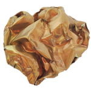
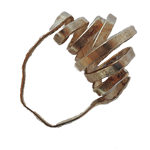


タウの木のアクセサリーの不思議
中村さんは初めて訪れた場所でご自身の作品を身につけられた方と出会うことがよくあるそうです。意識の合理性だけでは説明できない無意識の世界の深さを感じるエピソードだと思います。
意識的な不合理が、まかり通っているように感じる今の時代だから尚更、中村さんの作品に魅力を感じるのかもしれません。
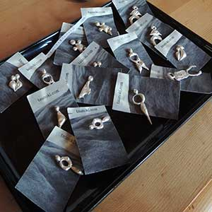
TRICONOTE トリコノートさん
魅力ある注目のお店 TRICONOTE
私たちが薪ストーブを導入した当時はまだなかったお店です。高岡にお店を構えられてからは時々足を運びました。おもちゃ箱をひっくり返したように楽しい店内。ストーブで温まる体と心。とても心地いい空間でした。富山市千里に移転され、広くなった店内には数多くのメーカーの薪ストーブが小物やアンティーク雑貨とともに陳列されています。
2020年夏に19年間使用した煙突を更新。猛暑日の中、息の合ったご兄弟での作業に見惚れるばかりでした。作業中も散らかることのない現場にご兄弟の人間性を垣間見たような気がします。
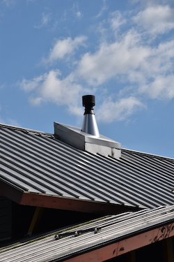
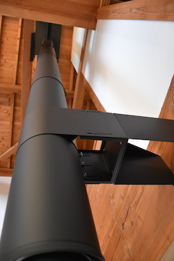
トリコノートさんのおしゃれでスマートな仕事
トリコノートさんは家族経営。オーナーと弟さんとが薪ストーブのメンテナンスや設置工事に奥様はお店を切り盛りされています。ご兄弟ならでは阿吽の呼吸で進む仕事ぶりは安心感があります。
家のイメージにあったおしゃれな設置デザインはトリコノートさんのWEBサイトで満喫いただけることでしょう。実用の美を具現化されているお店です。
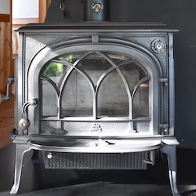
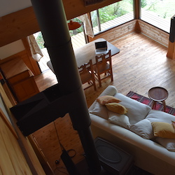
米三さん
富山の老舗家具店『米三』
老舗ということで、私たちにとって米三さんは最初敷居が高かったのですが、薪ストーブの購入・設置を機に我が家のインテリアに欠かすことのできないお店となりました。薪ストーブ本体はもちろん、煙突、メンテナンス用品、その他付属品など、2019年まで薪ストーブに関することは全て米三さん。担当のTさんのご退職を機に薪ストーブ関係はTRICONOTEさんにお願いすることにしました。
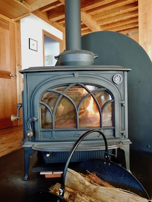
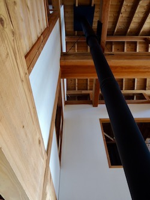
米三さんのインテリア
住み始めてから10年ほど経った2009年の夏、朝の日差しが耐えられなくなりました。カーテンは嫌いで住み始めてからずっとありませんでした。そこで暖簾という形で購入することにしました。富山県内のショップやネットショップを探し、欲しい品に出会ったのが米三さんでした。インド製で鳥や植物など自然のモチーフが手刺繍されています。メーカー最後のロットということで、細かい要望に応えていただきました。ちなみにポールはbue-dueさんに作っていただいています。
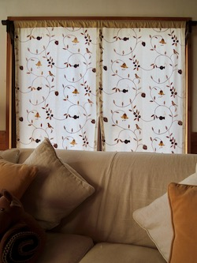
エアコンも米三さんで
気候変動の影響で夏の暑さが年々増しています。2021年、とうとう我が家でもエアコンを設置することにしました。同時に２階のエアコンの効きを高めるために間仕切り用カーテンもつけることにしました。ここでも米三さんが本領を発揮してくださいました。視界に入ってほしくなかったエアコンが、見ていて飽きないエアコンに変わったのです。DAIKINのエアコンrisoraに導いてくださったのが米三さんでした。間仕切り用のカーテンの設置も含め、私たちの要望に期待以上に応えてくださったのはYさん。老舗の底力を実感できます。
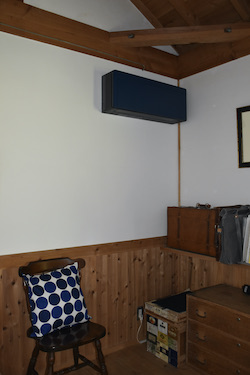
みどり共同購入会さん
健康の源、みどり共同購入会さん
最も近いスーパーマーケットまで5.5km。車の運転があまり好きではないので、食料品、日用品の購入は宅配を利用しています。みどり共同購入会の商品は、化学調味料や食品添加物を使用しておらず、遺伝子組み換え食品は扱っていません。また、その多くが国内産です。そのお陰でしょうか、以前はアレルギーに悩まされていましたが、今は病気知らずの日々を送れるようになりました。
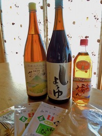
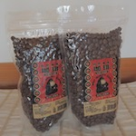
イベントでお出しいているコーヒーはみどり共同購入会さんから
以前開催していたイベントでお出ししたコーヒーは、みどり共同購入会で買い求めたものです。毎日、飲んでいるルワンダ産のフェアトレードコーヒーです。消費者が社会を変えるというと大げさに聞こえるかもしれませんが、One's Wayは、みどり共同購入会を利用して、安全な農産物や食品、日用品を作っていらっしゃる生産者の方々、企業を応援していきたいと思っています。
2021年7月にMさんがスタッフとして加わり、広報を担当なさっています。facebookも充実し、みどり共同購入会の魅力がいっそう伝わるようになりました。
リビングデザインセンターOZONE
家づくりの情報収集にOZONE
家づくりを始めるに当たり、最初に出会った設計士さんに教えていただいたのが、OZONEでした。東京へ行くたびに訪れ、情報収集をしました。家具や生活用品、住宅設備、建材まで、様々なショールームとショップ、住宅デザインの書籍や製品カタログを集めたライブラリーもあります。
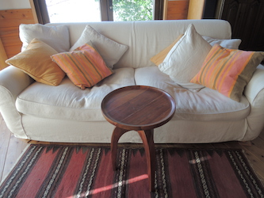
OZONEのインテリアに囲まれて
OZONEで購入したインテリアはもちろんですが、収集した情報は家づくり、庭づくりに活用しました。住み始めてからも、ウッドデッキの改修や外水栓の設置など、リフォームの度に訪れて情報を収集しています。
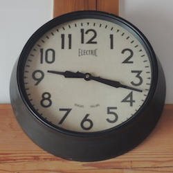
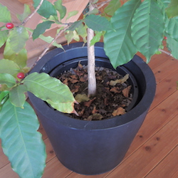